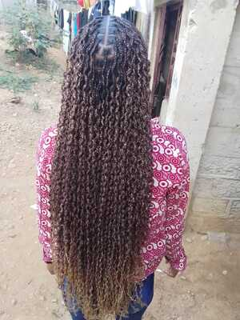
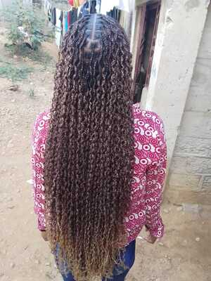

Olá, eu sou Ana Evánia Capita
Sou
A minha Missão é a Sua Satisfação
Quando criança já fazia muitas aventuras em bonecas, é daí mais que uma aprendizado saio uma paixão por satisfazer as pessoas realçando a beleza das mesmas. Com mais de 5 anos trabalhando com tranças, presto serviços de tranças por toda Luanda, fazendo as prestações de serviços ao domicílio (att.: Teremos um espaço em breve 😉).
Ver Projetos
 
